How to record with TAPE·FOUR: the deck, the cassettes, the tape switch, noise reduction, instruments and MIDI. Each control comes with what you should expect to hear when you use it.
WINDOWS · MACOS · LINUXOCTOBER 2026
Contents
1WelcomeWhat TAPE·FOUR is and how it differs from a DAW
TAPE·FOUR is a four-track cassette recorder that runs on your computer. It records onto a virtual cassette, works with any audio interface your computer has, on Windows, macOS or Linux, and plays plug-in instruments and effects (CLAP, VST3 and LV2 everywhere, Audio Units on a Mac and LADSPA on Linux) as if they were plugged into the deck.
It is deliberately not a DAW. Everything about it follows the workflow of a portable cassette multitracker:
Four mono tracks on one side of a tape, all running in one direction. The tape is a C-46, C-60 or C-90, and the length of your song is limited by the length of the tape.
No undo. Recording replaces whatever was on the tape under the armed tracks. To keep a take, don't record over it.
Everything goes to tape as audio. There are no MIDI tracks. Each track has a signal chain in front of it, the way a rack of gear sits in front of a real deck: instruments (plug-ins, the built-ins or a hardware synth), MIDI effects and audio effects. You play it, and what comes out of the chain is recorded as sound.
The tape is part of the sound. Each cassette type has its own headroom, treble limit, hiss and grain, taken from measurements of real tapes. The tape switch, noise reduction, speed and every bounce change the sound, just as they do on a real deck.
ABOUT THE SCREENSHOTSThe screenshots in this manual were taken on a test machine with no audio interface or MIDI devices connected. That's why the setup display reads NO AUDIO DEVICE and the audio tracks read INPUT NOT ACTIVE. On your computer these show your interface and its inputs.
2Getting started
Installing
Open the repository's Actions tab on GitHub, pick the latest green Build run, and download the one for your computer. Nothing needs installing. The version number (0.2.build) is in the window's title bar.
Computer
Download
Then
Windows, 64-bit
TapeFour-windows-x64
Unzip and run TapeFour.exe. Windows may warn that it comes from an unknown publisher, because it isn't code-signed: choose More info → Run anyway.
Mac, Apple silicon or Intel, macOS 11 or later
TapeFour-macos-universal
Unzip and move TapeFour.app to Applications. It isn't notarised, so the first time, right-click it and choose Open. Allow microphone access when asked: macOS asks this for any program that records from an audio input.
Linux, 64-bit
TapeFour-linux-x64
Extract the archive and run TapeFour. It uses ALSA, which every distribution has, and JACK when a JACK server is running. It plays CLAP, VST3, LV2 and LADSPA plug-ins.
TAPE·FOUR needs a 64-bit computer with at least 4 GB of memory. The loaded tape is held in memory and takes the same again on disk: 350 MB for a C-46, 460 MB for a C-60 and 690 MB for a C-90. The deck itself uses little processor time (about 1% of one core while playing); plug-ins are what cost.
The window opens where you last left it. Starting TAPE·FOUR again while it's running brings the running copy to the front.
Audio interface
Click the display at the top right of the deck (SETUP ›) to open Setup, then go to the Audio tab.
Setup → Audio. Choose the audio system and your interface, then the sample rate and buffer size, and the outputs.
Setting
What it does
What to expect
Audio device type, device
Chooses the audio system (see the table below) and the interface.
The setup display on the deck shows the system, sample rate, buffer size and round-trip latency. The first time you start, TapeFour opens the computer's usual device; on Windows it picks an ASIO driver if one is installed.
Sample rate, buffer
The interface's sample rate and block size.
A smaller buffer gives lower latency when you play live, but uses more CPU. 128 samples at 48 kHz is a good starting point.
Stereo out
The output pair the mix goes to.
The master fader controls this pair.
Phones
A second output pair, or the same as the stereo out.
The Phones knob on the master strip sets its level, separately from the master fader.
Overdub timing
±50 ms trim on top of the latency the driver reports.
Use it if parts recorded through the interface (audio inputs and hardware synths) land slightly early or late against what is already on tape. Positive values move recordings earlier. Instruments and bounces don't go through the interface, so they aren't affected.
Audio system
On
What to expect
ASIO
Windows
Your interface's own driver: the lowest latency. The best choice for overdubbing.
Windows Audio (WASAPI)
Windows
Works with any device, including the computer's own sound. Exclusive Mode and Low Latency Mode bring the latency down.
DirectSound
Windows
The oldest and slowest. For a device nothing else will open.
CoreAudio
macOS
Every Mac interface. To use two interfaces at once, combine them into an aggregate device in Audio MIDI Setup.
ALSA
Linux
Straight to the hardware. A hw: device gives the lowest latency, but no other program can use the interface at the same time.
JACK
Linux
Listed when a JACK server (or PipeWire's JACK support) is running. TapeFour shares the interface with other programs.
Whatever the system, recordings line up with what you heard while playing: TapeFour shifts each recording by the interface's reported latency. Parts played through the interface are shifted by the round trip (input and output); instruments only by the output, since they're made inside the computer; bounces not at all, since they come straight off the tape.
Every change is saved straight away. If the saved driver can't be opened at start-up (for example, because another program is using it), the deck tells you, and keeps your choice for next time.
MIDI controllers and synths
In Setup → MIDI & Deck, tick the controllers you want to use and the MIDI outputs your hardware synths are on. Chapter 13 covers this in full.
Plug-ins
In Setup → Plug-ins, choose Options… and scan each format you use. Plug-ins found here (instruments, MIDI effects and audio effects) appear in each track's signal chain. Each plug-in is scanned in a separate helper copy of TAPE·FOUR, so a plug-in that crashes or hangs while being scanned can't take the program down: it is set aside and the scan carries on.
Format
On
Looked for in
CLAP
Windows, macOS, Linux
Windows: Common Files\CLAP (in Program Files) and %LOCALAPPDATA%\Programs\Common\CLAP. Mac: /Library/Audio/Plug-Ins/CLAP and the same in your user Library. Linux: ~/.clap, /usr/lib/clap, /usr/local/lib/clap. Also any folders in the CLAP_PATH environment variable.
VST3
Windows, macOS, Linux
The standard VST3 folders.
Audio Units
macOS
Whatever macOS has installed.
LV2
Windows, macOS, Linux
The standard LV2 folders (on Linux ~/.lv2, /usr/lib/lv2, /usr/local/lib/lv2).
LADSPA
Linux
The standard LADSPA folders. LADSPA plug-ins are effects only.
Many plug-ins come in several formats. The list in a track's chain shows each plug-in once, in the best format you have: CLAP, then VST3, then Audio Units, LV2 and LADSPA. A deck you saved keeps the format it was made with. TAPE·FOUR also has two built-in instruments, TF Poly Synth and TF Electric Piano, and three built-in effects, TF Plate, TF Spring Reverb and TF Tape Echo, so you can start without any plug-ins.
Setup → Plug-ins. Scan once; the list is remembered.
Colours
In Setup → Display, choose the deck's colour theme. It changes at once and is remembered.
Theme
Keys and labels
Displays
Teal VFD (as it comes)
Teal
Blue-green, like the fluorescent displays on 1980s decks
Cobalt
Blue
Blue-white, like a backlit LCD
Mono
Cream
White: no colour but the lamps
Red / green
Red
Green, like an unlit LCD
The theme colours the deck, not the cassettes: each cassette keeps its own print. The pictures in this manual show Teal VFD.
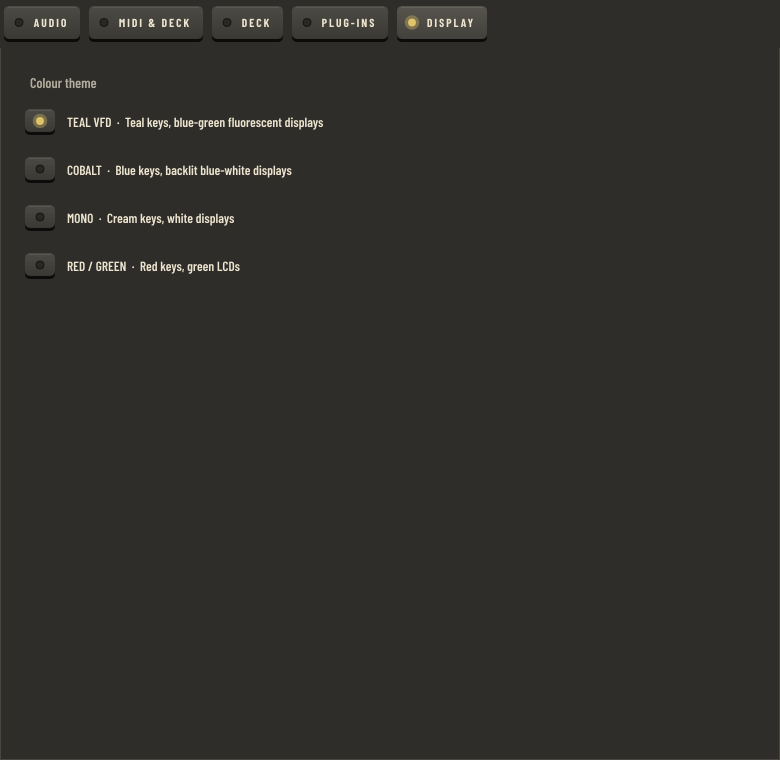
Setup → Display. Pick a theme; the deck changes at once.
3The front panel
The deck is laid out like a portastudio: the mixer runs the full height on the left, and the tape section is a column on the right, with the cassette at the top and the transport below it. The window can be resized; the deck keeps its 16:9 shape.
123456789101112131415161718192021
Every key on the deck works the same way: the LED above its label lights when it's on, and the key itself never changes colour. The colours mean the same thing everywhere: red for record and arm, green for play and a tape that matches the switch, amber for a mode that's on or a mismatch, orange for mute and yellow for solo. Keys that just do something once (EJECT, RESET, RTZ) have no LED.
1Setup display. Shows the audio driver and buffer. Click it to open Setup.
2MIDI IN / MIDI OUT lamps. They flash when notes come in from a controller or go out to a hardware synth.
3Cassette. The tape moves from the left spool to the right as it plays. Double-click the label to write on it.
4Inlay. Click it to take the J-card out and write the track list.
5EJECT. Puts in a new blank tape or loads one from the shelf. It fades while the tape is running: stop the tape first.
6Tape switch. Three keys, NORMAL, CHROME and METAL bias and EQ; the lit one is where the switch is (chapter 6).
7Tape counter, with RESET (set 000 here) and RTZ (return to 000).
8Status display. Transport state, time remaining, and warnings such as mismatches.
9Transport keys: REC, REW, F.FWD, PLAY, STOP. The LEDs in REC and PLAY light while they're engaged.
10Pitch: varispeed, smoothly from −12% to +12%.
11Tape speed: 1⅞ or 3¾ inches per second; the lit key is the speed.
12Noise reduction on or off; its LED shows which.
13NR type display. Click it to choose the type, and the rest of the deck, in Setup.
14Track display. What plays the track, which controller and input feed it, its signal chain as a row of blocks, and the NR, EQ and MIDI lamps. Click it to open the track's signal chain (chapter 8); double-click it to open the window of the first plug-in in the chain.
15Gain, EQ and pan. HIGH, MID with its FREQ knob, and LOW.
16Meter and fader. 0 VU on the meter is Dolby level on tape.
17MUTE, SOLO and ARM, each with its own lamp. Mute silences the track, solo picks what you hear, and an armed track plays its live input and records when you press REC (chapter 9).
18Master strip. Phones level, stereo meter with its peak readout, and master fader.
19LEARN. MIDI learn: map knobs, faders and buttons on your controller to the deck (chapter 13).
20Master deck display. The master tape, the side and how much is on it, and the file format. Click it to open the master deck (chapter 14).
21SIDE and MIXDOWN. Turn the master tape over, and arm a mixdown: PLAY then records the mix (chapter 14).
4Cassettes
Putting in a tape
With the tape stopped, press EJECT. The menu's top part inserts a new blank tape: choose the cassette (BASIC, SD, XR or MX), then the length, then its condition. The middle part works on the cassette in the deck. The bottom part, the tape shelf, lists every tape you have made, and the tape that's in the deck is ticked.
The eject menu. New blank tapes, the cassette in the deck, and the shelf.The tape shelf. Each entry shows the label, cassette, minutes used, tracks used and date.
Length
Per side
At 1⅞ ips
At 3¾ ips
Spools
C-46
23 min
23:00
11:30
Smallest packs
C-60
30 min
30:00
15:00
Medium
C-90
45 min
45:00
22:30
Largest packs
Like a real 4-track, TAPE·FOUR records all four tracks across the full width of the tape, running the same way (you can turn the cassette over, below). When the tape reaches the end, the transport stops and the status display shows END OF TAPE.
A blank tape's condition
A cassette's condition belongs to the cassette, as on a real one, so you choose it when you put in a blank. It is saved with the tape and travels with it.
Condition
Hiss
Treble
Mod. noise
Dropouts
NEW
as measured
as measured
as measured
almost none
USED
+0.5 dB
−0.5 dB
+1 dB
one every few minutes
WORN
+1.5 dB
−1.5 dB
+3 dB
about one a minute
CHEWED
+3 dB
−4 dB
+6 dB
several a minute
Dropouts sit at fixed places on the tape, so a dropout comes back at the same moment every time you play that stretch. A tape also wears and ages slowly as you use it (chapter 12). Tapes made before this version are given the condition closest to their old settings.
Turning the tape over: reverse recording
EJECT → Turn it over puts the cassette in side B up, as if you had taken it out and turned it round. The header above the cassette turns amber and the label shows B. Like a real 4-track, the deck now sees the tape from the other end:
everything on it plays backwards;
the tracks come in mirrored: what you recorded on track 1 is under the track 4 head, and track 2 is under track 3.
That is the classic way to get sounds that only exist backwards. Turn the tape over, record a cymbal, a guitar line or a reverb tail on a free track, and turn the tape back: it now plays in reverse, swelling into the beat.
Side A's start is side B's end, so after turning over you will usually rewind first. The counter keeps the number it showed, as on a real deck. Noise reduction flags, the tape switch, dropouts and wear stay with their places on the tape; decoding NR on a recording that plays backwards breathes, as it does on a real deck. The deck remembers which side is up along with the tape. Export its tracks always exports side A, so turn the tape back first.
Write-protect tabs
EJECT → Write-protect side A (or B, when side B is up) breaks out the tab of the side facing up and stops the deck recording on that side, as on a real cassette: pressing REC shows WRITE-PROTECTED instead. Choose it again to tape over the hole.
Cassette files (.cass)
EJECT → Export as a .cass file saves the cassette in the deck as a single file you can keep, send to someone or open on another computer. It holds the tape and nothing else: the four tracks (16-bit, uncompressed), what was recorded where and at what speed, the formulation, condition and wear, the label and the tabs. Your mixer settings and plug-ins stay behind. A C-60 is about 460 MB, a C-90 about 690 MB.
EJECT → Open a .cass file, or opening a .cass file with TAPE·FOUR, puts a copy on your shelf and loads it. The format is open and documented with the source code (docs/formats), so other programs can read and write it.
Exporting the tracks
EJECT → Export its tracks writes each track with something on it to its own file, as it plays back off the tape on this deck (speed, noise reduction, the tape switch and the tape's condition included). Every file starts at the start of the tape, so they line up with each other. EJECT → File formats chooses the format:
Format
Choices
Use it for
WAV (default)
16-bit, 24-bit, 32-bit float
Taking the tracks into another program at full quality.
FLAC
16-bit, 24-bit
The same quality in about half the space.
MP3
128 to 320 kbps
Sending a listen to someone.
Tick several, or All three, to get every format at once. Mixdowns use the same choice.
Saving
You never need to save. A tape is written to disk once it has been stopped for a second, and again whenever you change it. It is also saved when you eject it and when you quit. The deck remembers which tape was in when you quit and loads it next time.
Label and inlay
Double-click the label on the cassette to write on it. Click the inlay beside the cassette to take the J-card out of its case and write on it: the title, up to eight songs with their counter numbers, a note for each track, whether you recorded with NR, the speed, and the date. Click outside the card, press Esc or click X to put it back. The title on the inlay and the label on the cassette are the same text, so changing one changes the other.
The inlay, opened out: back flap, spine and front. Its colours follow the cassette type.
5The four tape types
Each cassette in TAPE·FOUR behaves like a real tape. Its headroom, treble limit, hiss, grain and output level come from published lab measurements of a real cassette of that kind.
The figures are in dB relative to Dolby level, the tape's reference level. On TAPE·FOUR that is 0 VU on the meters, or −12 dBFS. All figures are at 1⅞ ips without noise reduction.
Term
Meaning
What you hear
MOL 400 Hz
Maximum output level: where a 400 Hz tone reaches 3% distortion.
How loud you can record before the tape thickens and then distorts. Bass gets a little less room than the mids, as on real tape.
SOL 10 kHz
Saturation output level for treble.
How loud cymbals, hi-hats and bright synths can go before the tape squashes them. Treble saturates long before the mids, especially at 1⅞ ips.
S/N
Hiss on blank tape, A-weighted, below Dolby level.
The hiss in quiet passages.
Mod. noise
Modulation noise: grain that rides on the signal.
A fine roughness on sustained notes. It gets louder and quieter with the music, so noise reduction can't remove it.
Sensitivity
How loud the tape plays back what you recorded.
A small level shift on every pass through the tape. You notice it after several bounces.
EQ
The playback EQ time constant: 120 µs or 70 µs.
70 µs tapes have less treble hiss.
BASIC
TYPE I · NORMAL BIAS · 120 µs · MODELLED ON SONY HF
A budget ferric tape, the kind that came in multipacks. It has the least headroom and the most hiss and grain of the four. It sounds warm and slightly fuzzy, and compresses early if you record hot. It's good for sketches, lo-fi textures and anything you want to sound like an old demo.
MOL 400 / 100 Hz
+2.4 / +2.0 dB
SOL 10 kHz
−10.3 dB
S/N
54.3 dB(A)
Mod. noise
−36.1 dB
Sensitivity
−1.0 dB
SD
TYPE I · NORMAL BIAS · 120 µs · MODELLED ON TDK AD
A premium ferric tape and the all-rounder. It has good mid-range headroom, the best treble headroom of the Type I tapes, and moderate hiss. Tapes made before tape types existed play as SD. It's the tape to reach for when you don't have a reason to pick another.
MOL 400 / 100 Hz
+6.2 / +3.8 dB
SOL 10 kHz
−8.2 dB
S/N
60.3 dB(A)
Mod. noise
−44.3 dB
Sensitivity
−0.3 dB
XR
TYPE II · HIGH (CHROME) BIAS · 70 µs · MODELLED ON TDK SA
A chrome-position tape. Its 70 µs playback EQ makes the hiss quieter and less bright, and it plays back slightly hot. It has the least treble headroom of the four, so loud bright sounds dull and compress first, especially at 1⅞ ips. It's clean and quiet for vocals, acoustic instruments and pads. For bright, loud material, use 3¾ ips or MX.
MOL 400 / 100 Hz
+4.4 / +3.4 dB
SOL 10 kHz
−11.2 dB
S/N
60.9 dB(A)
Mod. noise
−47.2 dB
Sensitivity
+1.1 dB
MX
TYPE IV · METAL BIAS · 70 µs · MODELLED ON MAXELL MX
A metal tape. It has the most headroom everywhere (about 3 dB more mid-range and 1.4 dB more treble than SD), the lowest grain and the lowest hiss. It takes hot levels and bright material without complaint. It's the closest a cassette gets to transparent.
MOL 400 / 100 Hz
+9.1 / +8.0 dB
SOL 10 kHz
−6.8 dB
S/N
62.7 dB(A)
Mod. noise
−50.4 dB
Sensitivity
+0.8 dB
Choosing a tape: what to expect
If you…
BASIC
SD
XR
MX
record a vocal peaking at +3 VU
Audibly thick, a little gritty
Clean, slightly rounded
Clean
Clean
record hi-hats at 0 VU at 1⅞
Softened, a bit dull
Mostly intact
Noticeably dulled
Intact
listen to blank tape (NR off)
Most hiss
About 6 dB less
Less, and darker
Least
hold a long synth note
Slight roughness
Faint
Very faint
Practically none
bounce three times
About 3 dB quieter
About 1 dB quieter
About 3 dB louder
About 2.4 dB louder
Generation loss comes from each tape's sensitivity, which is applied on every pass. Noise reduction doubles it (chapter 11).
6The tape switch
The TAPE · BIAS · EQ switch under the cassette sets three things at once, as on a real deck: the record bias, the record EQ and the playback EQ.
A mismatch. An MX (metal) tape is loaded but the switch is at NORMAL. The LED on the NORMAL key is amber, and the status display reads BIAS LOW: TYPE IV TAPE AT NORMAL.
When a tape goes in, the switch moves to that tape's type. After that it stays where you put it, so a mismatch is always your choice. Restarting the audio device doesn't move it.
One key is lit: where the switch is. Its LED is green when that position suits the loaded cassette and amber when it doesn't. The status display then says which way the bias is off.
Every stretch of tape remembers the switch position it was recorded at, just as it remembers noise reduction and speed.
Bias: recording at the wrong position
A Type II tape needs about 1.5 times the bias of a Type I, and a Type IV about 2.5 times.
Too little bias (under-bias) leaves the tape bright and fuzzy. It distorts and compresses sooner and gets grainier.
Too much bias (over-bias) wipes out the treble as it records. The tape sounds dull and a little quieter, but slightly cleaner.
These effects are recorded into the tape. The table assumes you play the tape back at the same position you recorded at.
Tape ↓ · switch →
NORMAL
CHROME
METAL
Type I: BASIC, SD
Correct.
Over-biased by 3.5 dB. About −7 dB at 10 kHz, −0.9 dB overall, slightly cleaner (+0.9 dB MOL). Muffled.
Over-biased by 8 dB. About −16 dB at 10 kHz and −2 dB overall. Very dull, like a worn head.
Type II: XR
Under-biased by 3.5 dB. About +2.6 dB at 10 kHz, MOL −5.3 dB, grain +4 dB. Bright and edgy; distorts early.
Correct.
Over-biased by 4.5 dB. About −9 dB at 10 kHz and −1.1 dB overall. Dull.
Type IV: MX
Under-biased by 8 dB. MOL −12 dB, grain +10 dB, −2.5 dB overall, treble about −1 dB. Heavily distorted and gritty. Old recordings bleed through (see below).
Under-biased by 4.5 dB. About +2.5 dB at 10 kHz, MOL −6.8 dB, grain +5 dB. Bright and crunchy.
Correct.
ABOUT THESE FIGURESThe bias ratios between tape types follow the tape standards. How much the treble, headroom and grain move per dB of bias error is an estimate of typical real-deck behaviour, not a published measurement. The automated tests check every row of this table.
Playback EQ: playing back at the other position
NORMAL plays back with 120 µs EQ, while CHROME and METAL both use 70 µs. Each stretch of tape is played back through the EQ of the switch as it is now, compared with the EQ it was recorded with:
Recorded at
Played at
Result
CHROME or METAL (70 µs)
NORMAL (120 µs)
Treble lifted by a shelf starting near 1.3 kHz: about +4.5 dB at 8 kHz, up to +4.7 dB. Bright and hissy.
NORMAL (120 µs)
CHROME or METAL (70 µs)
The reverse: about −4.5 dB at 8 kHz. Muffled.
CHROME
METAL, or the other way round
No EQ change; both use 70 µs.
Blank-tape hiss follows the same rule: a Type II or IV tape played at NORMAL hisses brighter. You can combine both effects. For example, record a chrome tape at NORMAL (under-biased and bright), then play it back at CHROME.
The EQ lamp. These tracks were recorded at NORMAL and the switch is now at CHROME, so each track's EQ lamp is red and the lit switch key is amber. The EQ lamp flashes while the tape plays. It is green when the recording's EQ matches the switch, and off on blank tape.
Metal tape at NORMAL: old material bleeds through
On a NORMAL setting the erase head isn't strong enough to fully erase high-coercivity metal tape. If you record over an MX tape at NORMAL, about 30 dB of the old recording survives underneath the new one, mostly its bass. Treble erases more easily. Record over it at METAL and the old recording is fully gone (it measures below −90 dB).
TRY THISRecord a bass line on an MX tape at METAL. Set the switch to NORMAL and record a new part over it on the same track. Play it back: the old bass line is still there underneath, faint and muffled, like a ghost of the earlier take.
7Transport and counter
Control
What it does
What to expect
PLAY Space
Plays the tape.
Unarmed tracks play the tape; armed tracks keep playing their live input, so you can rehearse over the tape. The LED in the PLAY key lights.
STOP Space
Stops.
One second later the tape is saved.
REC R
Records on every armed track.
The LED in the REC key lights. If no track is armed, the status display says ARM A TRACK FIRST.
REC while playing
Punch-in.
Recording starts at once on the armed tracks. Press PLAY to punch out and keep playing. Tape before and after the punch is untouched. The new take fades in and out over 6 ms either side, like the gap between a deck's erase and record heads, so a punch never clicks.
REW, F.FWD, pressed once
Cue (forward) and review (back).
The tape winds at about a third of full speed with the head touching it lightly. You hear it faintly, high and fast going forward and backwards in review, so you can find a song by ear: the gaps between songs stand out as short silences. The status display reads CUE or REVIEW. Press PLAY to play from there. Pressing the other winding key reverses, still listening. REC does nothing while cueing.
REW, F.FWD, pressed again
Wind at full speed.
The head lifts clear and the tape winds silently. The motor drives the take-up spool, so the tape starts slowly and speeds up as that spool fills: about 9 times playing speed at the start of a C-60 side and 20 times at the end. A whole C-60 side takes about two minutes. Winding stops when the leader runs out at either end.
RESET
Sets the counter to 000.
Use it to mark the start of a song.
RTZ Home
Return to zero.
Rewinds until the counter reads 000, and stops. The status display reads RETURN TO ZERO.
The counter
The counter belongs to the deck, not to the cassette, as on a real machine:
It counts turns of the right-hand spool, not seconds. At the start of a side that spool is small and turns quickly, so the counter runs about twice as fast as at the end. A song's counter number is only true on this deck, which is why you write it on the inlay.
It keeps counting when you change the cassette or turn it over. Only RESET puts it back to 000. It also keeps its reading when you quit.
You can switch to a real-time counter (minutes and seconds) in Setup → DECK. The deck's counter type is part of the machine and is saved in TF-4.deck.
The status display shows the time left on the side at the current speed, or LEADER while the leader is across the head.
Leaders
Each end of a cassette is a few seconds of clear leader. It has no oxide, so nothing records on it and it doesn't hiss. A new cassette comes rewound, with the leader across the head; press PLAY or REC and the magnetic tape arrives a few seconds later, as on a real cassette. Every cassette's leaders are a little different, and stay the same wherever it's played.
NO UNDORecording replaces what was on the tape under the armed tracks, from the moment you press REC until you stop or punch out. Nothing else is touched. To keep a take, record on a different track or a new tape.
8Signal chains
Every track has a signal chain in front of the tape, like a rack of gear wired up before a real deck: up to eight blocks in a row. MIDI from your controller runs along the top of the chain and audio along the bottom, and whatever comes out of the last block is what the track records.
Click a track's display to drop down its chain. Click a block to select it, and its settings appear underneath. Click outside, click X or press Esc to close it.
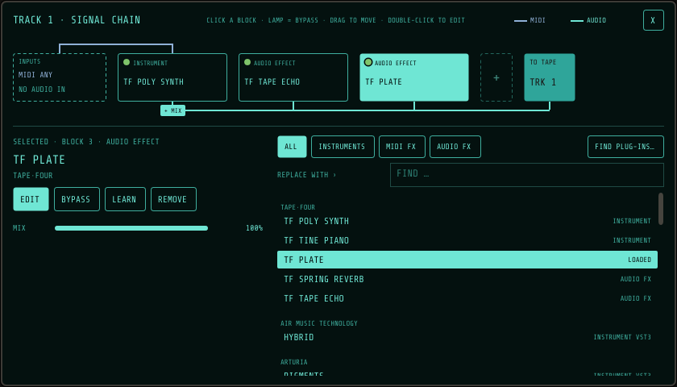
Track 1's chain. The inputs, then TF Poly Synth, TF Tape Echo and TF Plate, then the tape. The blue line is MIDI: it stops at the synth, the last block that listens to it. The amber line is audio: it starts where the synth mixes in (+ MIX). TF Plate is selected; underneath are its controls and the list to replace it from.
To
Do this
Add a block
Click + at the end of the chain and pick from the list.
Bypass a block
Click its lamp, or BYPASS. A bypassed block is dimmed and the signal passes it untouched.
Reorder
Drag a block left or right. A bar shows where it will land.
Open a plug-in's window
Double-click the block, or EDIT. The window stays on top, and Space, R and Home still work the transport from it.
Replace a block
Select it and pick another from the list beside it. The new block takes its place in the chain.
Remove a block
REMOVE, Delete, or right-click it.
The inputs
The first block is the track's inputs: what plays it and what it hears.
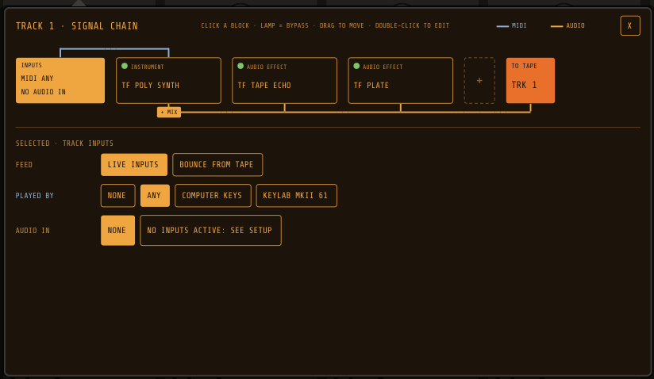
The inputs. On the test machine there is no interface, so no audio inputs are listed; on yours, each input appears with a level bar so you can see which one your instrument is plugged into.
Setting
Choices
What to expect
Feed
LIVE INPUTS or BOUNCE FROM TAPE
Live: the controller and audio input below feed the chain. Bounce: other tracks are mixed off the tape into the chain instead (see Bouncing, below).
Played by
NONE, ANY, or a named controller
Which controller's notes go into the chain. Any: every ticked controller. A named controller plays only this track, so different keyboards can play different armed tracks at once. Notes only reach the chain while the track is armed.
Audio in
NONE, IN n, or IN n+m
An input of your interface, or a pair mixed to mono. Tracks are mono; a stereo source on a pair is summed at half level per side. A track can have both a controller and an audio input: play a synth and sing through the same chain.
The blocks
There is one kind of chain, not separate instrument and effect slots. Each block does what it is:
Block
What it does with MIDI
What it does with audio
Instrument
Plays the notes that reach it.
Mixes its sound in with whatever is already in the chain (+ MIX), at its LEVEL. Two instruments one after the other layer, like two synths into a mixer. An instrument with an audio input (a vocoder, say) can instead PROCESS INPUT.
MIDI effect
Changes the notes for every block after it: an arpeggiator, a chord generator, or a retuner such as PitchGrid for MPE instruments. The lane after it is drawn brighter and tagged CHANGES MIDI.
Passes it through.
Audio effect
Passes it through.
Processes the audio, blended with the dry signal by its MIX.
External instrument
Sends the notes out to a hardware synth.
Mixes in the synth's audio from the input it's plugged into.
Order matters, as it does with real gear. A MIDI effect only changes the blocks after it. An effect placed before an instrument doesn't hear that instrument, only what came before it. So a typical chain is MIDI effects → instruments → audio effects, but nothing stops you putting a reverb on the voice coming in, then a synth on top, then a delay over both.
Plug-in instruments come in 12 dB below their own output, so a full-level synth sits near 0 VU. The built-in instruments don't need it.
Picking a block
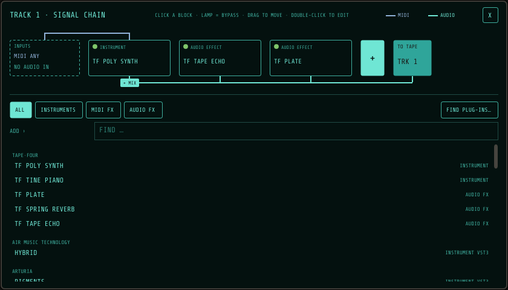
Adding a block. The built-ins first, then hardware synths, then every scanned plug-in, grouped by maker.
The tabs narrow the list to INSTRUMENTS, MIDI FX or AUDIO FX. Type to search; Return takes the first match. Two plug-ins with the same name are both listed, with their folder and file so you can tell them apart. FIND PLUG-INS… takes you to Setup → Plug-ins to scan. Plug-ins load in the background; until one arrives its block reads LOADING, and the chain keeps its order.
Built-in
Kind
What to expect
TF Poly Synth
Instrument
A warm two-oscillator analogue-style polysynth. Responds to MPE.
TF Electric Piano
Instrument
A reed electric piano after the Wurlitzer 200 and 200A, built from its mechanism: reeds, felt hammers, the charged pickup that makes it bark, dampers, the preamp's vibrato and the little speakers. It has its own editor (below).
TF Plate
Audio effect
A smooth, dense plate reverb with pre-delay. Size, damping and pre-delay.
TF Spring Reverb
Audio effect
The boingy, dripping reverb of a guitar amp's spring tank.
TF Tape Echo
Audio effect
A tape delay whose repeats darken and wobble as they fade. Time, feedback, tone and wow.
The electric piano
Select TF Electric Piano in a chain and press EDIT (or double-click it): its editor opens in the lower half of the chain, in eight tabs, the way a technician goes through the instrument. Every control can be learned (LEARN) and is saved with the deck. It plays 15 notes at once, in mono, as the real piano does: place it with the track's pan.
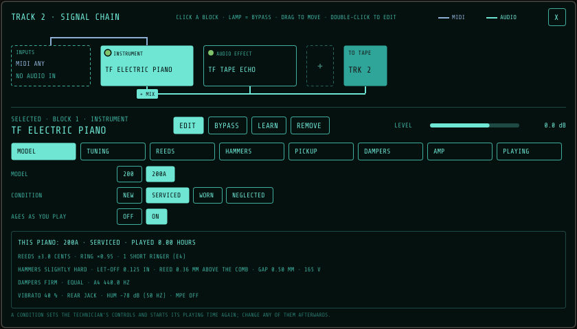
MODEL. A 200A, serviced: what the piano is like now, in one box.
Tab
What it holds
MODEL
200 or 200A: the 200's amp is noisier and its Alnico speakers smoother; the 200A's middle and upper reeds are a little thicker. A condition (NEW, SERVICED, WORN, NEGLECTED) sets the technician's controls for a piano in that state; change any of them afterwards. With AGES AS YOU PLAY on, the piano wears as you play it: over hundreds of hours its reeds drift out of tune, its hammer felt hardens, its damper felt softens and reeds start to ring short. Choosing a condition starts its playing time again.
TUNING
Equal temperament, just intonation, Pythagorean, quarter-comma meantone, Werckmeister III, Kirnberger III and Vallotti (on any key); PER NOTE, where you drag each of the 12 notes up or down in cents; EDO, any number of equal steps to the octave from 5 to 72 (type it, or step it); or a Scala scale (.scl) with its keyboard map (.kbm). A4 from 415 to 466 Hz, and octave stretch. The reeds' own drift comes on top.
REEDS
How far the reeds have drifted from the tuning, how long they ring, and how many are short ringers. The chart shows all 64 (A1 to C7): how long each rings, and how far out of tune it is. Short ringers are lit.
HAMMERS
Felt hardness, strike point, blow distance, let-off and the velocity curve. Harder felt and a longer blow hit the reed harder, with more overtones. Too big a let-off and the softest notes don't reach the reed at all.
PICKUP
How high each reed sits in the charged comb, the comb's gap, and its voltage (160 to 170 V on a healthy piano). Played softly, a reed swings a little and the pickup gives a round tone; played hard, it swings right through the comb and the tone folds over: the bark. The trace shows both.
DAMPERS
How firmly the dampers stop a note, and the noise of the dampers, the action and the pedal. The sustain pedal is your controller's.
AMP
Volume, vibrato depth (at the 200A's fixed 5.75 Hz), preamp drive, mains hum (50 or 60 Hz), and the output: SPEAKERS, the power amp and the two small oval speakers in the lid as the player hears them, or REAR JACK, the preamp's own output.
PLAYING
MPE is off as it comes: the piano hears only how hard you play, like the real one. Turned on, it can follow each note's pitch bend, and pressure can raise its volume, vibrato, drive or damp the note under your finger; slide can move the hammer felt or the reed height.
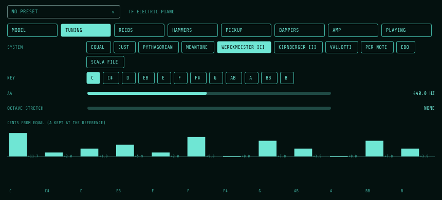
TUNING. Werckmeister III in C: each note's offset from equal temperament.
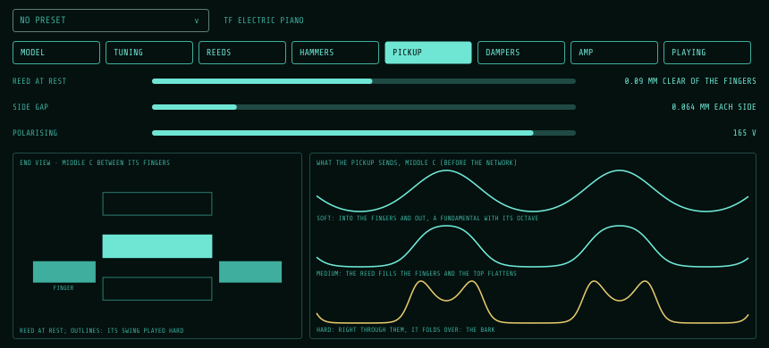
PICKUP. A reed in the comb, end on, and what the pickup sends when it's played softly and hard.
Presets
A preset keeps the whole piano: every control, its tuning (a Scala file and keyboard map included), its reeds as they drifted, and how long it has been played. The box at the left of the editor's header shows the preset it came from, with * once you've changed a control (playing it, and the wear that comes with that, doesn't count). Click the box for your presets, in place of the tabs:
SAVE writes the piano over its preset (with none, it asks for a name). SAVE AS NEW asks for a name and keeps it as another. Return saves, Esc cancels.
RENAME and DELETE act on the current preset; deleting asks once.
Click a preset to load it. What you had is replaced, so save it first if you want it.
SHOW FOLDER opens Documents/TapeFour/Presets/Electric Piano. Each preset is one file there, so you can copy them to another computer or share them.
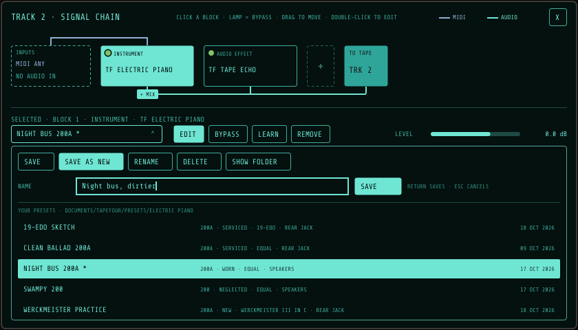
Presets. Naming a new one; the current preset is lit.
Hardware synths
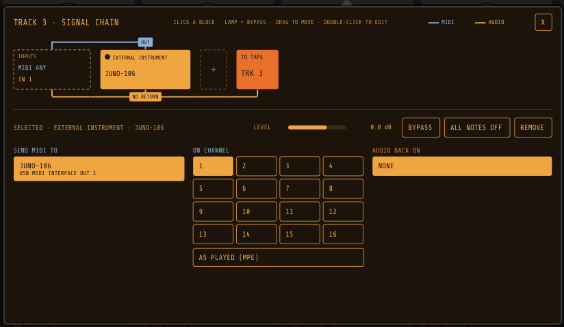
An external instrument, on a USB MIDI interface.
Tick the synth's MIDI output in Setup → MIDI & Deck (you can name it there), then add it from Hardware synths in the list. Choose where its MIDI goes and on which channel (AS PLAYED keeps an MPE controller's notes on their own channels), and which input its audio comes back on. Changing the route sends all-notes-off so nothing hangs; ALL NOTES OFF does it by hand. Its audio is recorded in time with the tape, allowing for the round trip through the interface.
Bouncing
Set a track's feed to BOUNCE FROM TAPE and tick the tracks to mix onto it. While recording, you hear the sources once, through their own EQ, pan and fader; use those to balance the bounce, then arm the destination and record. A muted source is left out. The bounce still goes through the track's chain, so you can put a reverb over a whole submix as you bounce it. It picks up another pass of the tape: a little more hiss and grain, and a level shift of the tape's sensitivity.
Missing plug-ins
If a chain uses a plug-in this computer doesn't have (a tape made on another machine, or a plug-in that was removed), its block reads MISSING and is skipped. Its settings are kept: rescan in Setup → Plug-ins and it comes back as it was, or pick a replacement.
Reading the track display
Track displays. Line 1: what plays the track. Line 2: its controller and audio input. Line 3: the chain, as blocks (dim ones are bypassed). Line 4: what the track is doing, and three lamps.
The tag above the display says what feeds the track: MIDI, AUDIO, AUDIO+MIDI or BOUNCE. Line 4 reads LIVE IN when the track is armed (you hear its inputs, not the tape), MUTED when it's muted, and → TAPE otherwise. When the tape under the head was recorded at a different speed from the one you're playing at, it shows the pitch shift in semitones instead, for example -12.0 SEMITONES.
Lamp
Lit
Red
NR
The tape under the head was recorded with noise reduction, or you're recording with NR on.
Flashes red while playing if the NR switch doesn't match how the tape was recorded.
EQ
Green: the tape here was recorded with the same playback EQ as the switch.
The switch's EQ differs from the recording's (chapter 6). It flashes while playing.
MIDI
Green flash: notes are reaching this track.
—
9The mixer
Each of the four channel strips has its controls in a single column, top to bottom. Double-click any knob or fader to reset it: gain to 0 dB, EQ and pan to centre, FREQ to 1.2 kHz, fader to the 0 mark.
Control
Range
What to expect
GAIN
−20 to +40 dB (0 dB at the default)
Input trim before the tape. Use it to put peaks near 0 VU. Higher levels reach the tape's MOL and compress or distort (chapter 5).
HIGH
±12 dB shelf: about ±11.6 dB at 10 kHz, ±7 dB at 5 kHz, half way at 4.5 kHz
Presence and air, well inside what the tape can record. Full boost is clearly brighter, and also brings up hiss.
MID
±12 dB peak
Presence, honk or boxiness, depending on FREQ. A cut makes a part sit back.
FREQ
250 Hz to 5 kHz (1.2 kHz at the centre)
Where MID works; the smaller knob with the blue pointer. Around 250–500 Hz for body or mud, 1–2 kHz for honk, 3–5 kHz for bite and vocal presence. Sweep it with MID boosted to find a spot, then cut or boost.
LOW
±12 dB shelf: about ±11.6 dB at 100 Hz, ±6 dB at 250 Hz
Weight. A cut helps when bouncing several tracks together.
PAN
L100 to R100, constant power
Centre is −3 dB to each side. Hard left puts the full level on the left output only.
Fader
−∞ to +7 dB (0 at the mark)
The level into the mix and into bounces. On an armed track it also sets the level going to tape, as on a portastudio.
Meter
20 LEDs, 0 VU at −12 dBFS
Green below 0 VU, amber from 0 to +3, red above +3. Keep peaks around 0 VU for a clean recording, and push into the amber for tape colour.
MUTE
On or off (orange lamp)
Silences the track everywhere: in the mix, in bounces, and its live input. An armed track that's muted still records to tape: you just don't hear it.
SOLO
On or off (yellow lamp)
Changes only what you hear. With any track soloed, only soloed tracks are heard. Solo doesn't change what is recorded or bounced.
ARM
On or off (red lamp)
An armed track plays its live inputs through its chain instead of its tape, whatever the transport is doing, and the display reads LIVE IN. The lamp flashes while armed and stays lit while recording. Press REC on the transport and it records to tape. To hear a take, disarm the track: while it is armed you hear the input, not the tape.
Mute wins over solo. A track that is both soloed and muted stays silent. If every soloed track is also muted, nothing is heard, and the status display says SOLOED TRACK IS MUTED so you know why.
The master strip has a stereo meter, the master fader for the stereo out, and the Phones knob, which sets the level of the phones output pair independently.
What the EQ and gain record, and what they don't
On a cassette 4-track the channel strip sits between the input and the tape. TAPE·FOUR works the same way: gain, EQ and the fader shape what is recorded on an armed track. On playback, the same strip shapes what you hear from the tape. To fix a recording later, adjust the strip on playback, or bounce it through the strip onto another track.
10Speed and pitch
Setting
What it does
What to expect
1⅞ ips
Normal cassette speed.
The tape's full length. Treble saturates sooner and there's slightly more hiss.
3¾ ips
Double speed, as on many 4-track portastudios.
Half the recording time. About an octave more treble headroom (the treble limit moves up), and about 3 dB less hiss in the audible range.
Playing at the other speed
Every stretch of tape remembers the speed it was recorded at.
A recording made at 3¾ and played at 1⅞ sounds an octave lower at half speed, and the reverse sounds an octave higher. The track display shows the shift in semitones. Record at 1⅞ and play at 3¾ for chipmunk vocals; do the reverse for slow, dark textures.
PITCH
Varispeed, smoothly from −12% to +12% (about ±2 semitones). Double-click to return to 0.
Speeds up or slows down the tape and changes pitch and tempo together. The tape glides to a new setting over a fraction of a second, like a capstan motor, so turning it while the tape plays bends the pitch rather than jumping. Use it to tune the tape to an instrument, or to record a part slowed down and play it back at normal speed. The status display shows the setting, for example PLAY 1⅞ +3.7%.
Wow, flutter and drift (chapter 12) are added on top of the pitch setting, so the tape always moves slightly unevenly unless you turn them off.
11Noise reduction
Noise reduction encodes what you record and decodes on playback. On the way to tape it boosts quiet sounds, mostly the treble. On the way back it turns them down again, and the tape hiss goes down with them. Turn it on with the Noise reduction button. Choose the type by clicking the NR type display, or in Setup → DECK.
Type
How it works
Hiss reduction
Character
2:1 compander
As dbx type II, the system on most portastudios: the whole signal is compressed 2:1 on record and expanded 1:2 on playback, steered by a detector that listens mostly to the treble, with fixed treble emphasis.
The most, 30 dB and more
Very quiet between notes. Because the whole band moves, the hiss rises and falls with the music ("breathing"), most noticeably on sparse, bright parts.
Sliding band B
As Dolby B: quiet treble is lifted on record, starting about 500 Hz and reaching 10 dB from about 4 kHz up. As a sound gets louder the lifted band slides up above it, so loud sounds are left alone and the treble above them stays quiet.
About 10 dB, in the treble
Gentle and forgiving; little breathing.
Sliding band C
As Dolby C: two such stages, one working 20 dB below the other, reaching two octaves lower. Quiet sounds get up to 20 dB of lift (about 15 dB at 400 Hz). Very high treble is trimmed before recording and restored after, and loud treble is held back from the tape so it doesn't saturate.
About 20 dB, from the mid-range up
Quieter than B, and more sensitive to level and treble errors: the most demanding of a good deck and tape.
The three types follow the published designs: B matches Dolby Laboratories' own encoder response, and C the Dolby C test points, within a fraction of a dB. The tape's hiss is generated on the tape and passes through the decoder like the music, so you hear exactly what each system does to it.
Mismatched NR
Tape remembers whether it was recorded with NR. If you play it back with the switch the other way, the track's NR lamp flashes red. Encoded tape played without NR sounds bright and squashed, and the treble pumps. Plain tape played with NR sounds dull and lifeless.
How the tape type and noise reduction interact
Noise reduction expects the tape to give back exactly what the encoder put on it. Anything that changes level or treble on the way through gets enlarged by the decoder, not just passed along. In TAPE·FOUR the encoder sits before the tape model and the decoder after it, so all of this happens on its own:
Hiss floor. NR removes a fixed amount, so the tape's own hiss still matters. MX with C or 2:1 is the quietest combination, and BASIC with B the noisiest.
Level errors grow. With 2:1, a 1 dB difference becomes 2 dB. SD (−0.3 dB) loses about 0.6 dB per pass with NR on. XR (+1.1 dB) gains about 2.2 dB. B and C mistrack in the treble on quiet passages.
Treble errors grow and move. A bias or EQ mismatch is a treble error. B and C read it as a level change, so a bright mismatch gets brighter on quiet passages and a dull one duller. The treble "breathes" with the music. With 2:1 the treble error is doubled throughout.
Treble saturation. The encoder lifts quiet treble before the tape. On tapes with little treble headroom (XR and BASIC, especially at 1⅞ ips), loud bright parts saturate after encoding. The decoder then mistracks, and cymbals turn dull and swishy. MX has the most room.
Grain. NR can't remove modulation noise, which rides on the signal. A 2:1 compander's gain swings make it, and the hiss, rise and fall. That's most obvious on BASIC.
12The deck and the tape's condition
As in the real world, some of the sound belongs to the machine and some to the cassette. The machine's wow, flutter, heads and crosstalk stay the same whatever tape is in it. The cassette's formulation, condition and wear go with the cassette, wherever it is played.
The deck: Setup → DECK
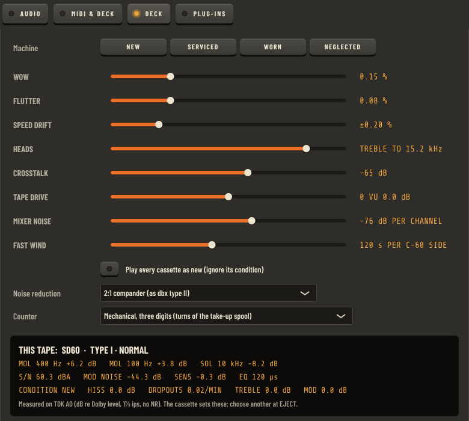
Setup → DECK, with a new SD60 loaded.
Control
Range
What to expect
Wow
0–0.6%
A slow pitch waver (under 1.5 Hz). It's most audible on sustained notes and piano.
Flutter
0–0.3%
A fast waver (6–12 Hz). It gives a slight shimmer, and above 0.15% a watery roughness.
Speed drift
0 to ±1%
The tape speed wanders slowly, every few seconds, as with tired motor belts.
Heads
Treble to 4–20 kHz
Worn or misaligned heads lose treble on playback, whatever the tape. It dulls everything played back, hiss included.
Crosstalk
None, or −100 to −40 dB
Neighbouring tracks leak into each other. You may hear it as a faint ghost of track 2 behind track 1.
Tape drive
−6 to +6 dB (centre = 0 VU at Dolby level)
Where 0 VU lands on the tape. More drive brings saturation and treble compression earlier, the way a deck calibrated hot would. Less drive keeps it cleaner. The playback level isn't changed. Double-click to return to the centre.
Mixer noise
−100 to −60 dB per channel (as supplied: −76 dB)
The mixer's own hiss, as on any analogue desk. Each channel adds its own, which follows its fader and pan; the mix bus adds a little of its own that doesn't. You rarely hear it over the tape, but with noise reduction on, between notes, it's what remains. The default is TASCAM's figure for the 424.
Fast wind
60–200 s per C-60 side (as supplied: 120 s)
How long the machine takes to wind one side end to end.
Noise reduction
2:1, B or C
See chapter 11.
Counter
Mechanical or real time
See chapter 7. Changing it resets the counter.
The machine presets set the mechanism and heads (the first five controls). The mixer's noise and the wind time belong to the machine too, but don't change with its condition:
Machine
Wow
Flutter
Drift
Heads
Crosstalk
NEW
0.08%
0.045%
±0.1%
18 kHz
−70 dB
SERVICED (as supplied)
0.15%
0.075%
±0.2%
15.2 kHz
−65 dB
WORN
0.30%
0.15%
±0.4%
9.3 kHz
−55 dB
NEGLECTED
0.45%
0.24%
±0.7%
6.6 kHz
−45 dB
The panel below the controls shows the cassette in the deck: its measured figures and its condition. Tick Play every cassette as new to have the deck ignore cassettes' condition and age; their formulation still counts. The deck's settings are saved in TF-4.deck, beside the settings file.
Wear and age
Real tapes change slowly, and so do these. Nothing here is exaggerated: a tape you use for months still sounds like the same tape.
Use. Every pass over the heads wears that stretch of tape a little, and only that stretch (cueing counts as a quarter of a pass). After about 400 passes it has lost half a dB of treble, gained about a dB of modulation noise, and has twice the dropouts it started with. The wear slows down from there.
Time. The oxide loses up to 0.3 dB of treble over the years.
Print-through. A recording very faintly magnetises the turns of tape either side of it on the reel. You hear it as a quiet pre-echo and post-echo in the silence just before and after loud sounds: about 60 dB down a few days after recording, and about 50 dB down after twenty years.
13MIDI, MIDI learn and the deck state
Setup → MIDI & Deck. Controllers in, hardware synths out, MIDI control with the list of mappings, and deck recall.
The tick boxes in Setup are small LED keys too: lit is on.
Controllers in
Use: TAPE·FOUR only listens to controllers that are ticked. Each track then chooses its controller in its chain's inputs (chapter 8).
MPE: tick it for MPE controllers (Osmose, Seaboard, LinnStrument and others). Known MPE controllers start ticked. A track played by an MPE controller tells its instrument about the MPE zone (lower zone, 15 channels). Each note then gets its own pitch bend, pressure and timbre (CC74). The built-in instruments respond directly. Plug-ins need MPE support, and some need it switched on in their own settings. CLAP plug-ins that take MIDI get MPE as it is played.
Bend range: type the per-note pitch-bend range your controller sends (the Osmose default is 48 semitones). If it's wrong, bent notes land at the wrong pitch.
Computer keyboard: A W S E D F T G Y H U J K O L P ; play notes like a piano keyboard, and Z and X change octave.
Plugging in while running
TAPE·FOUR notices MIDI devices being plugged in and out while it runs. Controllers and synth outputs you have ticked reconnect on their own, and tracks routed to them carry on. A controller TAPE·FOUR has never seen comes in switched on; untick it in Setup if you don't want it.
Hardware synths out
Tick the MIDI outputs your synths are on. You can give each one a name, such as "JUNO-106", which the chain and the track display then show instead of the port name. Add the synth to a track's chain as an external instrument (chapter 8). The MIDI OUT lamp at the top of the deck flashes when notes go out.
MIDI learn
Any knob, fader or button on your controller can move a control on the deck or a parameter of a plug-in.
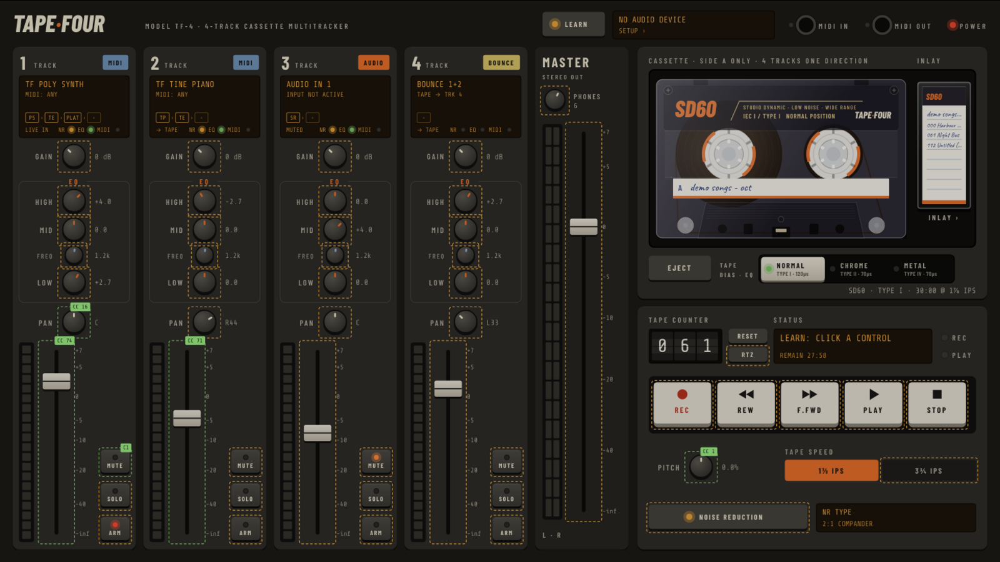
Learn mode. Every control that can be learned is outlined: amber if it's free, green with a badge if it's already mapped (here, the KeyLab's CC 74 is on track 1's fader and a pad is on its mute).
Press LEARN at the top of the deck. Its lamp lights and the controls that can be learned are outlined.
Click a control. It lights in the deck's accent colour and reads MOVE A CONTROL.
Move a knob or fader, or press a button, on your controller. The status display confirms it, for example LEARNED: TRK 1 FADER ← CC 74.
Click another control to learn the next, or press LEARN or Esc to finish.
Without entering learn mode, right-click any of these controls and choose Learn MIDI control or Forget MIDI control.
Can be learned
Controls
Each track
Gain, High, Mid, Freq, Low, Pan, Fader, Mute, Solo, Arm
To learn a plug-in parameter, open the track's chain, select the block and press LEARN there. Either touch the control in the plug-in's own window or pick it from the list, then move a control on your keyboard. The block's mappings are listed under it, each with an X to forget it.
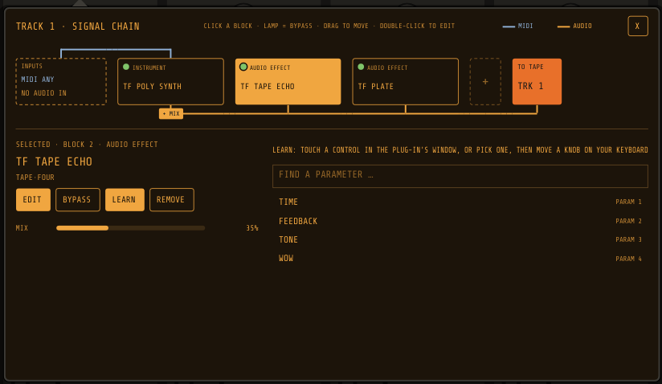
Learning a plug-in parameter. Touching Feedback in the echo's window, or clicking it here, picks it.
How mapped controls behave
Pickup. A knob or fader only takes over once it passes the control's current position, so nothing jumps when you first touch it. Until then the status display tells you which way to turn it. Pickup can be turned off per mapping in the list.
Endless encoders are recognised while learning (the common relative formats) and nudge the control up and down, with no pickup needed.
14-bit controllers that send a CC pair (0–31 with 32–63) are combined for fine resolution.
Buttons and pads learned onto a switch (mute, solo, arm, tape speed, noise reduction) toggle it each press, and onto a transport key press that key.
A mapped control is kept for its job. Its messages don't also reach the track's instruments, so a knob mapped to a fader doesn't sweep a synth's filter at the same time. Tick Also plays in the list to pass them on as well.
MIDI Machine Control
Many keyboards and control surfaces have transport buttons that send MIDI Machine Control (MMC). With Follow transport buttons that send MIDI Machine Control ticked (the default), they play, stop, record, wind and return the tape with no learning needed. A button that sends a plain CC or note can be learned onto a transport key instead.
The mappings list
Setup → MIDI & Deck lists every mapping: which controller and message it's from, what it controls, how it moves (knob, 14-bit, encoder or press), and its Pickup and Also plays settings. ✕ forgets one. Mappings to the deck are kept with your settings. Mappings to a plug-in's parameters are kept with that block, so they travel with the tape and come back when the deck is recalled.
Recall the deck with each tape
Every tape remembers the deck it was last used with:
each track's inputs and signal chain, with every plug-in's settings and MIDI mappings;
MIDI routing;
mute and solo;
gain, EQ, pan and faders;
master and phones;
speed and pitch;
the tape switch and noise reduction.
A plug-in's sound is saved when you close its window, a second after the tape stops, when the tape is saved or ejected, and when you quit. While a plug-in's window stays open it's also saved once a minute while the tape is stopped, so a crash costs at most a minute of tweaking. Big plug-ins are never asked for their sound while the tape is running.
With Recall the deck with each tape ticked, loading a tape puts the deck back exactly as it was. Unticked (the default), the deck stays as it is when you change tapes. The tape switch always moves to the new tape's type either way.
14Mixdown and the master deck
When the mix is right, record it to a second cassette deck: the master deck, a good stereo hi-fi deck. The mix goes onto a stereo master tape and is played straight back off it, as on a three-head deck, and that is what is written to the files. You hear the master bus as usual while it records.
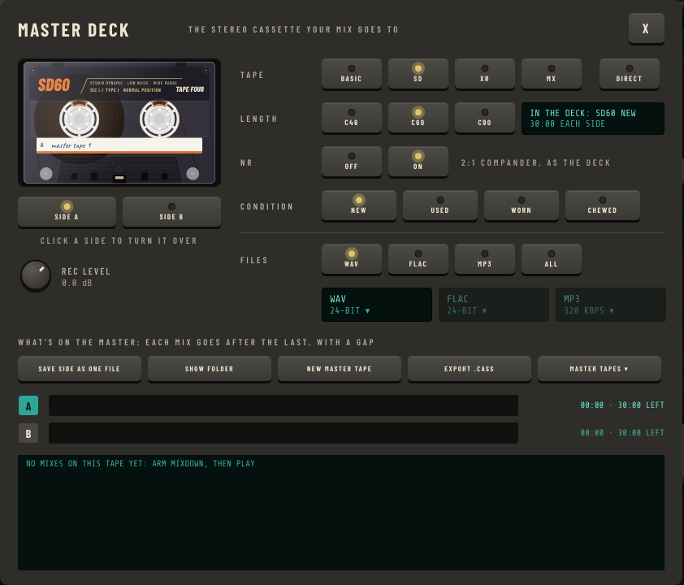
The master deck, opened from the display on the master strip.
Setting up the master deck
Click the display at the top of the MASTER strip.
Tape
BASIC, SD, XR or MX, as on the TF-4. DIRECT skips the tape and writes the mix exactly as it is.
Length
C-46, C-60 or C-90 for new master tapes. A master tape has two sides, like any cassette.
NR
Record and play the master with noise reduction, of the same type as the TF-4's.
Condition
The condition of new master tapes, as in chapter 4.
Rec level
The master deck's record level, −12 to +6 dB. It can be changed during a mix.
Files
WAV, FLAC, MP3 or all three, with their bit depth or bit rate. This is the same choice as for track exports.
Changing the tape, length or condition while the master tape is still blank swaps it for a new one of that kind. Once it has a mix on it, NEW MASTER TAPE puts in a fresh one, and MASTER TAPES loads an older one. Every master deck setting is remembered. The master deck's own machine settings are in TF-M.deck, beside the settings file.
Making a mix
Press MIXDOWN under the master fader. Its LED lights and the status display says which mix is next.
Press PLAY, from wherever you want the mix to start. The master deck records.
Press STOP to end the mix. The master deck lets the last moment come off the tape, then finishes the files.
The PEAK readout above the master meter holds the loudest level of the mix, and the display warns if the mix clipped. Each mix goes after the last one on the current side, with a four-second gap. When a side is full the mix ends there: press SIDE (or click the other side in the master deck) to turn the tape over.
Your mixes
The files go to Documents/TapeFour/Mixdowns/, in a folder named after the tape, one file per format; SHOW FOLDER opens it. The master deck lists every mix on the master tape and where it sits on each side. Click one to listen to it, off the master tape. SAVE SIDE AS ONE FILE writes a whole side, gaps and all, as one file, and EXPORT .CASS saves the master tape itself as a cassette file (chapter 4), rewound to the start of side A, so whoever plays it first starts at the beginning. That's the file to put on your phone for the TF-P1 Pocket player, which has its own guide.
15Reference
Keyboard
Key
Action
Space
Play / stop
R
Record (punch in while playing)
Home
Return to zero
Esc
Close the signal chain or inlay; leave learn mode
Delete
Remove the selected block from a chain
A … ;
Play notes; Z / X change octave
Where things are kept
Tapes
Documents/TapeFour/Tape Shelf/: one folder per tape, holding the cassette (the same files as in a .cass: cassette.json, state.json, and each track's audio and map) and session.xml (the mixer and plug-ins that go with it). Tapes from earlier versions are converted the first time they're loaded, and the old files are kept with .bak on the end. Tapes are saved in the background: every five seconds while recording, so a crash costs seconds rather than a take; a second after the transport stops; and on eject and quit.
Mixdowns
Documents/TapeFour/Mixdowns/, one folder per tape.
Settings
TapeFour.settings: audio device, MIDI, deck MIDI mappings, the knobs and the master deck. Beside it, TF-4.deck and TF-M.deck hold the two machines. In %APPDATA%\TapeFour on Windows, ~/Library/Application Support/TapeFour on a Mac, ~/.config/TapeFour on Linux. Only written when something has changed.
Crash reports
Crashes, next to the settings. If TapeFour ever crashes it writes a report there (the version and a stack trace, and on Windows a .dmp file) and says so when it next starts.
Troubleshooting
Problem
Try this
NO AUDIO DEVICE
Open Setup → Audio and choose your device. If another program holds it (common with ASIO and exclusive-mode WASAPI), close that program, then reselect the device. On a Mac, check TapeFour is allowed the microphone in System Settings → Privacy & Security.
REC does nothing
Arm at least one track. The status display says ARM A TRACK FIRST.
A take seems to have recorded silence
While a track is armed you hear its live input, not the tape. Disarm it and play the take back.
An instrument doesn't play
Tick the controller in Setup → MIDI & Deck. Check Played by in the track's chain inputs, and arm the track: instruments only sound while armed. Check the instrument isn't bypassed or after a MIDI effect that filters notes out. Watch the MIDI IN lamp and the track's MIDI lamp.
Recordings sound distorted
Lower GAIN so peaks sit around 0 VU, use a tape with more headroom (MX), centre Tape drive, and check the tape switch matches the tape.
Everything sounds dull
Check the EQ lamps (playback EQ mismatch), the NR lamps (NR mismatch), the tape switch (over-bias) the heads in Setup → DECK, and the cassette's condition.
Bounces get quieter or louder
That's the tape's sensitivity, doubled with 2:1 NR. Correct it with the faders before each bounce.
A plug-in doesn't appear after a scan
Scan its format: each format has its own Scan for new or updated … plug-ins in Setup → Plug-ins → Options…. On Linux, LV2 plug-ins must be in an LV2 folder (one that holds .lv2 bundles), and CLAP plug-ins in a CLAP folder or one named in CLAP_PATH.
A plug-in shows as failed after a scan
It crashed or hung while being scanned, so TAPE·FOUR set it aside. Update the plug-in, select it in Setup → Plug-ins, choose Options… → Remove selected plug-in from list, and scan again.
A controller plugged in later doesn't play
Check it's ticked in Setup → MIDI & Deck, that the track's Played by names it or is set to Any, and that the track is armed.
A plug-in is missing when a tape is recalled
Its block reads MISSING. Rescan in Setup → Plug-ins. The plug-in's settings are kept until it can be loaded again.
Nothing is heard and the status says SOLOED TRACK IS MUTED
Every soloed track is also muted, and mute wins. Unmute it or clear the solos.
A mapped knob does nothing at first
That's pickup: turn it past the control's current position (the status display says which way), or untick Pickup for it in Setup → MIDI & Deck.
A knob moves a control and a synth at once
Untick Also plays for that mapping.
NOT ENOUGH DISK SPACE
A blank tape is only put in if the disk can hold the whole of it (all four tracks recorded end to end). Free some space, or choose a shorter tape.
DISK NEARLY FULL
Shown when you press REC and the disk couldn't hold the rest of the tape. The take still records; anything that can't be written is retried at every save, so free some space before you stop.
LAST SESSION CRASHED
The report is in the Crashes folder (see above). The tape was saved up to five seconds before the crash.
A ghost of an old take is audible
You recorded over a metal tape at NORMAL. Record over it again at METAL to erase it fully.
Cassette measurements
Cassette
Type
Measured on
MOL 400
MOL 100
SOL 10k
S/N (A)
Mod. noise
Sens.
EQ
BASIC
I
Sony HF
+2.4
+2.0
−10.3
54.3
−36.1
−1.0
120 µs
SD
I
TDK AD
+6.2
+3.8
−8.2
60.3
−44.3
−0.3
120 µs
XR
II
TDK SA
+4.4
+3.4
−11.2
60.9
−47.2
+1.1
70 µs
MX
IV
Maxell MX
+9.1
+8.0
−6.8
62.7
−50.4
+0.8
70 µs
dB relative to 400 Hz Dolby level (0 VU), at 1⅞ ips, without noise reduction. TAPE·FOUR's automated tests record tones through each cassette and check that these figures come out within about 1 dB, and that the tape switch's EQ and bias effects match chapter 6.
Sources
Compact Cassette tape types and formulations, Wikipedia (including Roberson's measurements of retail cassettes): en.wikipedia.org/wiki/Compact_Cassette_tape_types_and_formulations
"Analog Tape 101, part 3: Bias Magic", Mix: mixonline.com/recording/analog-tape-101-part-3-bias-magic-373029
TDK D, AD, SA and MA product pages, vintagecassettes.com
TAPE·FOUR is free software under the GNU GPL v3. Fonts: Barlow Condensed, Share Tech Mono and Caveat (SIL Open Font License); Inter (SIL Open Font License). Cassette names and designs in TAPE·FOUR are its own. The real tapes named above are referenced only as the source of the measurements.